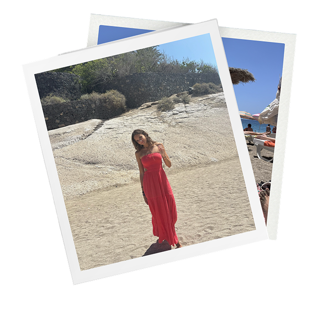
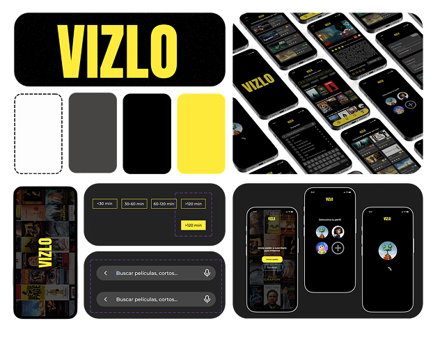
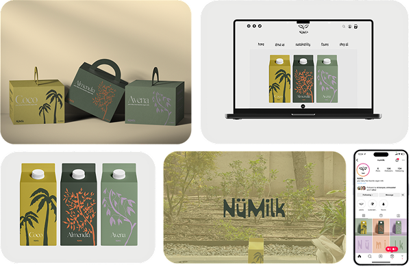
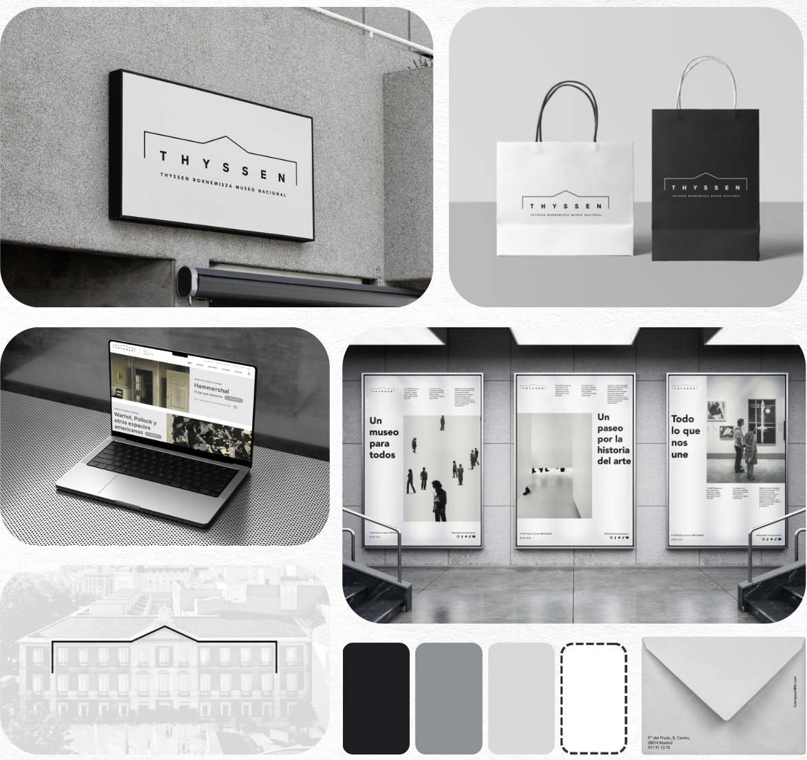

Me llamo Aitana Juaristi y tengo 19 años. Actualmente curso el segundo año del grado en Diseño Gráfico y Multimedia en Madrid, por lo que durante el curso académico vivo entre Donostia y Madrid, y el resto del tiempo resido en Donostia. Me considero una persona creativa, curiosa y comprometida, con una gran motivación por aprender y mejorar constantemente. Me gusta cuidar los detalles en todo lo que hago y disfruto enfrentándome a nuevos retos que me permitan crecer personal y profesionalmente.
@aitanajuaristi
VIZLO es una aplicación móvil diseñada para transformar el tiempo de espera en una experiencia más amena y aprovechable. La app recomienda contenidos audiovisuales según los minutos disponibles del usuario, ofreciendo películas, cortometrajes o microcontenidos adaptados a cada intervalo de tiempo.
2025.


Nümilk es una marca de leche ecológica ecológica con tres variedades: coco, almendra y avena. El proyecto consiste en crear su identidad visual y sistema gráfico, aplicándolo a packaging, packs, web y redes sociales. La propuesta se basa en una estética orgánica y limpia, con colores llamativos y de alto contraste. Además, cada producto incluye una ilustración de la planta de su origen para reforzar la relación entre la leche y su materia prima.
2025.
Proyecto de diseño de identidad visual enfocado en el rebranding del Museo Thyssen-Bornemisza. El proyecto consiste en la creación de un manual de identidad visualcompleto, desarrollado a partir de una nueva propuesta de sistema gráfico para la institución.
2026.
